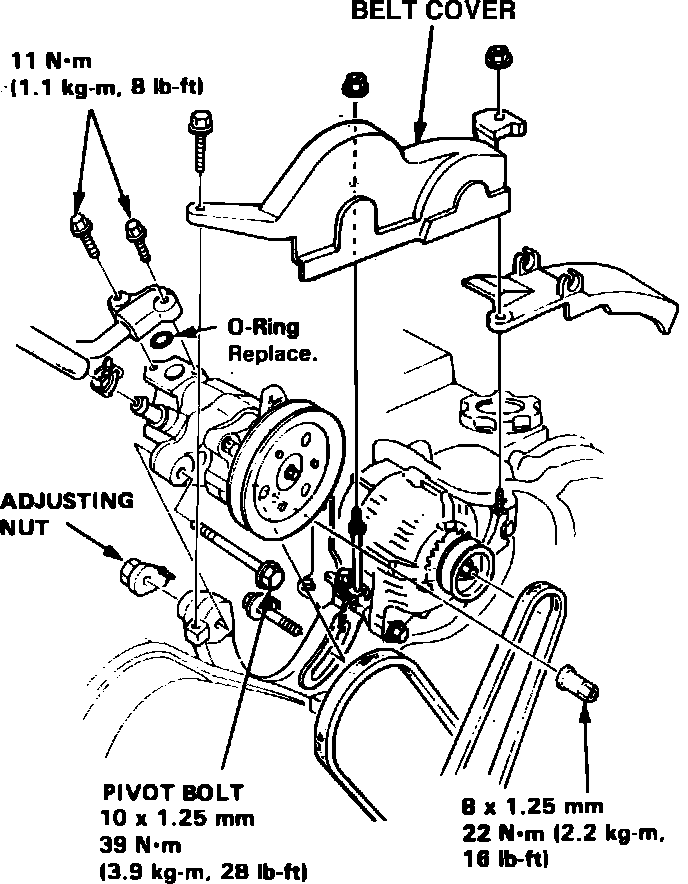

Power Steering Pump: Service and Repair
Fig. 17 Power steering pump replacement. Legend:

1. Remove belt cover, then drain power steering fluid into a suitable container.
2. Disconnect and cap hoses from power steering pump reservoir.
3. Loosen pump pivot bolt and remove pump drive belt.
4. Remove power steering pump attaching bolt and nut and the pump, Fig. 17.
5. Reverse procedure to install.